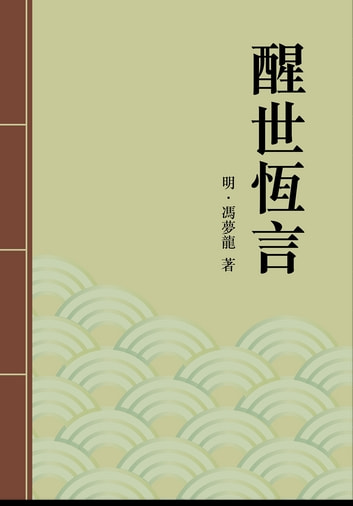

第二十三卷金海陵纵欲亡身(1)
第二十三卷金海陵纵欲亡身(1)#

昨日流莺今日蝉，起来又是夕阳天。
六龙飞辔长相窘，何忍乘危自着鞭。
这四句诗是唐朝司空图所作。他说流光迅速，人寿无多，何苦贪恋色欲，自促其命。看来这还是劝化平人的。平人所有者，不过一身一家，就是好色贫淫，还只心有余而力不足。
若是贵为帝王，富有四海，何令不从，何求不遂。假如商惑妲己，周爱褒姒，汉嬖飞燕，唐溺杨妃，他所宠者止于一人，尚且小则政乱民荒，大则丧身亡国，何况渔色不休，贪淫无度，不惜廉耻，不论纲常。若是安然无恙，皇天福善祸淫之理，也不可信了。
如今说这金海陵，乃是大金国一朝聪明天子。只为贪淫无道，蔑礼败伦，坐了十二年宝位，改了三个年号，初次天德三年，二次贞元也是三年，末次正隆六年。到正隆六年，大举侵宋，被弑于瓜洲。大定帝即位，追废为海陵王。后人将史书所载废帝海陵之事，敷演出一段话文，以为将来之戒。正是：话说金废帝海陵王初名迪古，后改名亮，字元功，辽王宗干第二子也。为人善饰诈，慓急多猜忌，残忍任数。年十八，以宗室子为奉国将军，赴梁王宗弼军前任使。梁王以为行军万户，迁骠骑上将军。未几，加龙虎卫上将军，累迁尚书右丞，留守汴京，领行台尚书省事。后召入为丞相。初，熙宗以太祖嫡孙嗣位。海陵念其父辽王，本是长子，己亦是太祖嫡孙，合当有天下之分，遂怀觊觎，专务立威以压伏人心，后竟弑熙宗而篡其位。心忌太宗诸子，恐为后患，欲除去之。
与秘书监萧裕密谋。裕倾险巧诈，因构致太傅宗本、秉德等反状。海陵杀宗本，遣使杀秉德、宗懿及太宗子孙七十余人，秦王宗翰子孙三十余人。宗本已死，裕乃取宗本门客萧玉，教以具款反状，令作主名上变，遍诏天下。天下冤之。萧裕以诛宗本功为尚书右丞，累迁至平章政事，专恣威福，遂以谋逆赐死。此是后话。
且说海陵初为丞相，假意俭约，妾媵不过三数人。及践大位，侈心顿萌，淫志蛊惑。自徒单皇后而下有大氏、萧氏、耶律氏，俱以美色被宠。凡平日曾与淫者，悉召入内宫，列之妃位。又广求美色，不论同姓、异姓，名分尊卑，及有夫无夫，但心中所好，百计求淫。多有封为妃嫔者。诸妃名号，共有十二位，昭仪至充媛九位、婕妤、美人、才人三位，殿直最下，其他不可举数。大营宫殿，以处妃嫔。土木之费，至二千万。牵一车之力，至五百人。宫殿之饰，遍傅黄金，而后绚以五采，金屑飞空如落雪，一殿之费，以亿万计。成而复毁，务极华丽。这俱不必题起。
且说昭妃阿里虎，姓蒲察氏，驸马都尉没里野女也。生而妖娆娇媚，嗜酒跌宕。阿里虎嫁于宗室子阿虎迭，生女重节七岁。阿虎迭伏诛，阿里虎不待闭丧，携重节再蘸宗室南家。南家故善淫，阿里虎又以父所验方，修合春药，与南家昼夜宣淫。重节熟睹其丑态，阿里虎恬不讳也。久之，南家髓竭而死。南家父突葛速为南京元帅都监，知阿里虎淫荡丑恶，莫能禁止。因南家死，遂携阿里虎往南京，幽闭一室中，不令与人接见。阿里虎向闻海陵善嬲戏，好美色，恨天各一方，不得与之接欢，至是沉郁烦懑，无以自解。且知海陵亦在南京，乃自图其貌，题诗于上。诗曰：阿里虎，阿里虎，夷光、毛嫱非其伍。一旦夫死来南京，突葛爬灰真吃苦。有人救我出牢笼，脱却从前从后苦。
题毕，封缄固密，拔头上金簪一枝，银十两，贿嘱监守阍人，送于海陵。海陵稔闻阿里虎之美，未之深信。一见此图，不觉手舞足蹈，羡慕不止。于是托人达突葛速，欲取之。突葛速不从。海陵故意扬言，突葛速有新台之行，欲突葛速避嫌而出之。突葛速知海陵之意，只不放出。及篡位三日，诏遣阿里虎归父母家，以礼纳之宫中。阿里虎益嗜酒喜淫，海陵恨相见之晚。数月后，特封贤妃，再封昭妃。
一日，阿虎迭女重节来朝。重节为海陵再从兄之女，阿里虎其生母也。留宿宫中。海陵猝至，见重节年将及笄，姿色顾眄迥异诸女，不觉情动，思有以中之。而虞阿里虎之沮己，乃高张灯烛，令室中辉煌如昼。自傅淫药，与阿里虎及诸侍嫔裸逐而淫，以动重节。重节闻其嬉笑声，潜起以听，钻穴隙窥之，神痴心醉，几欲破户趋前，羞缩自止。海陵嬲谑至四鼓方止。诸嫔咸灭烛就寝，寂然无声。独重节咬指抚心，倏起倏卧，席不得暖，只得和衣拥被，长叹歪眠。忽闻阿里虎床复有声，欲再起窥之，头岑岑不止，倚枕听之，又闻有击户声。重节不应。击声甚急。重节问为谁。海陵捏作侍嫔取灯声，以促其开。重节强起，拔去门栓。海陵突入，搂抱接唇。重节欲脱身逃去，海陵力挽就榻中，盘桓一夜，谑浪千般。
置阿里虎于不理者将及旬矣。阿里虎欲火高烧，情烟陡发，终日焦思，竟忘重节之未出宫也。命诸侍嫔侦察海陵之所之。一侍嫔曰：“帝得新人，撇却旧人矣。”阿里虎惊问道：“新人为谁？几时取入宫中？”侍嫔答道：“帝幸阿虎重节于昭华宫，娘娘因何不知？”阿里虎面皮紫，怒发如火，捶胸跌脚，诟骂重节。侍嫔道：“娘娘与之争锋，恐惹笑耻。且帝性躁急，祸且不测。”阿里虎道：“彼父已死，我身再醮，恩义久绝，我怕谁笑话！我誓不与此淫种俱生，帝亦奈我何哉！”
侍嫔道：“重节少艾，帝得之胜百斛明珠。娘娘齿长矣！自当甘拜下风，何必发怒！”阿里虎闻诮，愈怒道：“帝初得我，誓不相舍。讵意来此淫种，夺我口食！”乃促步至昭华宫。见重节方理妆，一嫔捧凤钗于侧。遂向前批其颊，骂道：“老汉不仁，不顾情分，贪图淫乐，固为可恨！汝小小年纪，又是我亲生儿女，也不顾廉耻，便与老汉苟合，岂是有人心的！”重节亦怒骂道：“老贱不知礼义；不识羞耻，明烛张灯，与诸嫔裸裎夺汉，求快于心。我因来朝，踏此淫网，求生不得生，求死不得死，正怨你这老贱，只图利己，不怕害人，造下无边恶孽，如何反来打我！”两下言语不让一句，扭做一团，结做一块。众多侍嫔，从中劝释。阿里虎忿忿归宫。重节大哭一场，闷闷而坐。
顷之，海陵来，见重节面带忧容，两颊泪痕犹湿，便促膝近前，偎其脸问道：“汝有恁事，如此烦恼？”重节沉吟不答。侍嫔道：“昭妃娘娘批贵人面颊，辱骂陛下，是以贵人失欢。”海陵闻之，大怒道：“汝勿烦恼！我当别有处分。”是日，阿里虎回宫，益嗜酒无赖，诋訾海陵不已。海陵遣人责让之。
阿里虎恬无忌惮，暗以衣服遗前夫南家之子。海陵侦知之，怒道：“身已归我，突葛速之情犹未断也！”由是宠衰。
海陵制，几诸妃位，皆以侍女服男子衣冠，号假厮儿。有胜哥者，身体雄壮若男子，给侍阿里虎本位，见阿里虎忧愁抱病，夜不成眠，知其欲心炽也，乃托宫竖市角先生一具以进。阿里虎使胜哥试之，情若不足，兴更有余。嗣是，与止同卧起，日夕不须臾离。厨婢三娘者不知其详，密以告海陵道：“胜哥实是男子，扮作女耳，给侍昭妃非礼。”海陵曾幸胜哥，知其非男子，不以为嫌，惟使人诫阿里虎勿箠三娘。阿里虎怒三娘之泄其隐也，搒杀之。海陵闻昭妃阁有死者，想道：“必三娘也。若果尔，吾必杀阿里虎。”侦之，果然。是月为太子光英生月，海陵私忌不行戮。徒单后又率诸妃嫔为之哀求，乃得免。胜哥畏罪，先仰药而亡。阿里虎闻海陵将杀己，又见胜哥先死，亦绝粒不食，日夕焚香吁天，以冀脱死。逾月，阿里虎已委顿不知所为。海陵乃使人缢杀之，并杀侍婢棰三娘者，因此不复幸昭华宫。出重节为民间妻，后屡召幸，出入昭妃位焉。
柔妃弥勒者，耶律氏之女，生有国色，族中人无不奇之。
年十岁，色益丽，人益奇。弥勒亦自谓异于众人，每每沽娇夸诩。其母与邻母善，时时迭为宾主。邻母之子哈密都卢年十二岁，丰姿颇美，闲尝与弥勒儿戏于房中，互相嘲谑，遂及于乱。
说话的，那十二岁的孩儿，和那十岁的女儿，晓得甚么做作，只无过是顽耍而已，怎么就说个乱字？看官们有所不知，北方男女，生得长大倜傥，容易知事。况且这些骚挞子，干事不瞒着儿女。他们都看得惯熟了，故此小小年纪，便弄出事来。
光阴荏苒，约摸有一年多光景。一日也是合当败露。弥勒正在房中洗浴，忘记上了门闩，恰好哈密都卢闯进房来。弥勒忙叫他回去，说：“娘要来看添汤。”那哈密都卢见弥勒雪白身子在那浴盆中，有如玉柱一般，欢喜得了不得，偏要共盆洗裕弥勒苦不肯容。正在拘执喧闹，其母突至。哈密都卢乘间逸去。母大怒，将弥勒痛棰戒训，关防严密，再不得与哈密都卢绸缪欢狎。
倏经天德二年，弥勒年已逾笄。海陵闻其美也，使礼部侍郎迪辇阿不取之于汴京。迪辇阿不者，华言萧珙也，为弥勒女兄择特懒之夫，芳年美貌，颇识风情。一见弥勒，心神摇动，惧惮海陵，强自沮遏，不意弥勒久别哈密都卢，欲火甚爇，见迪辇阿不生得标致，心里便有几分爱他。只是船只各居，难以通情达意。弥勒遂心生一计，诈言鬼魅相侵，夜半辄喊叫不止。相从诸婢，无可奈何，只得请迪辇阿不同舟共济。果尔寂然。从婢实不察其隐衷也。于是眉目相调，情兴如火，彼此俱不能遏。遇晚，便同席饮食，谑浪无所不至。
所以不遽上手者，迪辇阿不谓弥勒真处子，恐点破其躯，海陵见罪故耳。一晚，维舟傍岸，大雨倾盆，两下正欲安眠，忽闻歌声聒耳。迪辇阿不虑有穿窬，坐而听之，乃岸上更夫倡和山歌，歌云：雨落沉沉不见天，八哥儿飞到画堂前。
燕子无窠梁上宿，阿姨相伴姐夫眠。
迪辇阿不听见此歌，叹道：“作此歌者，明是讥诮下官。
岂知下官并没这样事情。谚云‘羊肉不吃得，空惹一身臊’也！”
叹息未毕，又闻得窣窣似有人行。定睛一看，只见弥勒踽踽凉凉，缓步至床前矣。迪辇阿不惊问：“贵人何所见而来？”弥勒道：“闻歌声而来，官人岂年高耳聋乎？”迪辇阿不道：“歌声聒耳，下官正无以自明，贵人何不安寝？”弥勒道：“我不解歌，欲求官人解一个明白。”迪辇阿不遂将歌词四句逐一分析讲解。弥勒不觉面赤耳热，偎着迪辇阿不道：“山歌原来如此，官人岂无意乎？”迪辇阿不跪于床前，告道：“下官心非木石，岂能无情，但惧主上闻知，取罪不校”弥勒便搂抱他起来说道：“我和官人是至亲瓜葛，不比别人。到主上跟前，我自有道理支吾，不必惧怕。”当下两个兴发如狂，就在舟中成其云雨。但见：蜂忙蝶恋，弱态难支。水渗露湿，娇声细作。一个原是惯熟风情，一个也曾略尝滋味。惯熟风情的，到此夜尽呈伎俩；略尝滋味的，喜今番方称情怀。一个道大汉果胜似孩童，一个道小姨又强如阿姊。一个顾不得女身点破，一个顾不得王命紧严。鸳鸯云雨百年情，果然色胆天来大。
一路上朝欢暮乐，荏苒耽延。道出燕京，迪辇阿不父萧仲恭为燕京留守，见弥勒面貌，知非处女，乃叹道：“上必以疑杀珙矣。”却不知珙之果有染也。
已而入宫，弥勒自揣事必败露，惶悔无地。见海陵来，涕交颐下，战栗不敢迎。海陵淫兴大作，遂列烛两行，命侍嫔脱其衣而淫之。弥勒掩饰不来，只得任其做作。海陵见非处女，大怒道：“迪辇阿不乃敢盗尔元红，可恼可恨！”呼宫竖捆绑弥勒，审鞫其详。弥勒泣告道：“妾十三岁时，为哈密都卢所淫，以至于是，与迪辇阿不实无干涉。”海陵叱问：“哈密都卢何在？”弥勒道：“死已久矣。”海陵道：“哈密都卢死时几岁？”弥勒道：“方十六岁。”海陵怒道：“十六岁小孩童，岂能巨创汝耶？”弥勒泣告道：“贱妾死罪，实与迪辇阿不无干！”海陵笑道：“我知道了：是必哈密都卢取汝元红，迪辇阿不乘机入彀也。”弥勒顿首无言。即日遣出宫，致迪辇阿不于死。弥勒出宫数月，海陵思之，复召入，封为充媛，封其母张氏华国夫人，伯母兰陵郡君萧氏为巩国夫人。越日，海陵诡以弥勒之命，召迪辇阿不妻择特懒入宫乱之，笑曰：“迪辇阿不善躧混水，朕亦淫其妻以报之。”进封弥勒为柔妃，以择特懒给侍本位，时行幸焉。
崇义节度使乌带之妻定哥，姓唐姑氏，眼横秋水，如月殿姮娥，眉插春山，似瑶池玉女，说不尽的风流万种，窈窕千般。海陵在汴京时，偶于帘子下瞧见定哥美貌，不觉魄散魂飞，痴呆了半晌，自想道：“世上如何有这等一个美妇人！
倒落在别人手里，岂不可惜！”便暗暗着人打听是谁家宅眷。
探事人回覆：“是节度使乌带之妻，极是好风月有情趣的人，只是没人近得他。他家中侍婢极多，止有一个贵哥是他得意丫鬟，常时使用的。这贵哥也有几分姿色。”
海陵就思量一个计策，差人去寻着乌带家中时常走动的一个女待诏，叫他到家里来，与自己篦了个头，赏他十两银子。这女待诏晓得海陵是个猜刻的人，又怕他威势，千推万阻，不敢受这十两银子。海陵道：“我赏你这几两银子自有用你处，你不要十分推辞。”女待诏道：“但凭老爷分付。若可做的，小妇人尽心竭力去做就是，怎敢望这许多赏赐？”海陵笑道：“你不肯收我银子，就是不肯替我尽心竭力做了。你若肯为我做事，日后我还有抬举你处。”女待诏道：“不知要妇人做恁么事？”海陵道：“大街南首高门楼内，是乌带节度使衙内么？”女待诏答道：“是节度使衙。”海陵道：“闻你常常在他家中篦头，果然否？”女待诏道：“他夫人与侍婢，俱用小妇人篦头。”海陵道：“他家中有一个丫鬟叫做贵哥，你认得否？”女待诏道：“这个是夫人得意的侍婢，与小妇人极是相好，背地里常常与小妇人东西，照顾着小妇人。”海陵道：“夫人心性何如？”女待诏道：“夫人端谨严厉，言笑不苟。只是不知为甚么欢喜这贵哥？凭着他十分恼怒，若是贵哥站在面前一劝，天大的事也冰消了。所以衙内大小人，都畏惧他。”
海陵道：“你既与贵哥相好，我有一句话央你传与贵哥。”
女待诏道：“贵哥莫非与老爷沾亲带故么？”海陵道：“不是。”
女待诏道：“莫非与衙内女使们是亲眷往来，老爷认得他么？”
海陵也说：“不是。”女待诏道：“莫非原是衙内打发出去的人？”
海陵道：“也不是。”女待诏道：“既然一些没相干，要小妇人去对他说恁么话？”海陵道：“我有宝环一双、珠钏一对，央你转送与贵哥，说是我送与他的。你肯拿去么？”女待诏道：“拿便小妇人拿去，只是老爷与他既非远亲，又非近邻，平素不相识，平白地送这许多东西与他。倘他细细盘问时，叫小妇人如何答应？”海陵道：“你说得有理，难道教他猜哑谜不成？我说与你听，须要替我用心委曲，不可乱事。”女待诏道：“分付得明白，妇人自有处置。”海陵道：“我两日前在帘子下看见他夫人立在那里，十分美貌可爱，只是无缘与他相会。打听得他家，只有你在里面走动。夫人也只欢喜贵哥一人。故此赏你银子，央你转送这些东西与他，要他在夫人跟前通一个信儿，引我进去，博他夫人一宵恩爱。”女待诏道：“偷寒送暖，大是难事，况且他夫人有些古怪兜搭，妇人如何去做得？”海陵怒道：“你这老虔婆，敢说三个不去么？我目下就断送你这老猪狗！”只这一句，吓得女待诏毛发都竖了，抖做一团道：“妇人不说不去，只说这件事，必须从容缓款，性急不得。怎么老爷就发起恼来？”海陵道：“我如今也不恼你了。
只限你在一个月内，要圆成这事，不可十分怠缓。”
女待诏唯唯连声，跑到家中，算计了一夜，没法入脚。只得早早起来，梳洗完毕，就把宝环珠钏藏在身边，一径走到乌带家中。迎门撞见贵哥。贵哥问道：“今日有何事？来得恁早？”女待诏道：“有一个亲眷，为些小官事，有两件好首饰，托我来府中变卖些银两，是以早来。”贵哥道：“首饰在那里？
我用得的么？”女待诏道：“正是你们用得的，你换了他的倒好。”贵哥道：“要几贯钱？拿与我看一看。”女待诏道：“到房中才把与你看。”贵哥引他到了自家房内，便向厨柜里搬些点心果子请他吃，问他讨首饰看。那女待诏在身边摸出一双宝环放在卓子上，那环上是四颗祖母绿镶嵌的，果然耀日层光，世所罕见。贵哥一见，满心欢喜，便说：“他要多少银子？”
女待诏道：“他要二千两一只，四千两一双。”贵哥舔舌道：“我只说几贯钱的东西，我便兑得起。若说这许多银子，莫说我没有，就是我夫人一时间也拿不出来，只好看看罢。”又道：“待我拿去与夫人瞧一瞧，也识得世间有这般好首饰。”女待诏道：“且慢着！我有句话与你说个明白，拿去不迟。”贵哥道：“有话尽说，不必隐瞒。”
女待诏道：“我承你日常看顾，感恩不荆今日有句不识进退的话，说与你听，你不要恼我，不要怪我。”贵哥道：“你今日想是风了。你在府中走动多年，那一日不说几句话，怎的今日说话我就怪你恼你不成？你说！你说！”女待诏道：“这环儿是一个人央我送你的，不要你的银子。还有一双珠钏在此。”连忙向腰间摸出珠钏，放在卓子上。贵哥见了，笑道：“你这婆子说话真个风了！我从幼儿来在府中，再不曾出门去，又不曾与恁人相熟，为何有人送这几千两银子的首饰与我？想是那个要央人做前程，你婆子在外边，指着我老爷的名头，说骗他这些首饰；今日露出马脚，恐怕我老爷知道，你故此早来府中说这话骗我？”女待诏道：“若是这般说，我就该死了。
你将耳朵来，我悄悄说与你听。”贵哥道：“这里再没有人来听的，你轻轻说就是了。”
女待诏道：“这宝环珠钏，不是别人送你的，是那辽王宗干第二世子，见做当朝右丞，领行台尚书省事完颜迪古老爷央我送来与你的。”贵哥笑道：“那完颜老爷不是那白白净净没髭须的俊官儿么？”女待诏道：“正是那俊俏后生官儿。”贵哥道：“这到希奇了！他虽然与我老爷往来，不过是人情体面上走动，既非府中族分亲戚，又非通家兄弟，并不曾有杯酌往来。若说起我一面也不曾相见，他如何肯送我这许多首饰？”
女待诏道：“说来果忒希奇，忒好笑！我若不说，便不是受人之托，终人之事；我若轻轻说出来，连你也吃一个大惊。”贵哥笑道：“果是恁么事情？你须说个明白。”女待诏才定了喘息，低了声音，附着贵哥耳朵说道：“数日前完颜右丞在街上过，恰好你家夫人立在帘子下面，被他瞧见了。他思量要与你夫人会一会儿，没个进身的路头。打听得只有你在夫人眼前说得一句话，故此央我拿这宝环珠钏送与你，要你做个针儿将线引。你说希奇也不希奇，好笑也不好笑！”贵哥道：“癞虾蟆躲在阴沟洞里指望天鹅肉吃，忒差做梦了！夫人好不兜搭性子！侍婢们谁敢在他跟前道个不字？莫说眼生面不熟的人要见他，就是我老爷与他做了这几年夫妻，他若不欢喜时，等闲不许他近身。怎么完颜右丞做这个大春梦来！”女待诏道：“依你这般说，大事成不得了。我依先拿这环钏送还了他，两下撒开，省得他来絮聒。”
那贵哥口里虽是这般回覆，恰看了这两双好环钏，有些眼黄地黑，心下不割舍得还他，便对女待诏道：“你是老人家，积年做马泊六的主子，又不是少年媳妇，不曾经识事的，又不是头生儿，为何这般性急？凡事须从长计较，三思而行。世上那里有一锹掘个井的道理？”女待诏道：“不是我性急，你说的话，没有一些儿口风，教我如何去回覆右丞。不如送还了他这两件首饰，倒得安静。”贵哥道：“说便是这般说，且把这环钏留在我这里，待我慢慢地看觑个方便时节，躧探一个消息回话你。若有得一线的门路，我便将这物件送了夫人。
你对右丞说，另拿两件送我何如？”女待诏道：“这个使得。只是你须要小心在意，紧差紧做，不可丢得冰洋了。我过两三日就来讨个消息，好去回覆右丞。”说毕，叫声聒躁去了。贵哥便把这东西，放在自己箱内，踌躇算计，不敢提起。
一夕晚，月明如昼，玉宇无尘。定哥独自一个坐在那轩廊下，倚着栏杆看月。贵哥也上前去站在那里，细细地瞧他的面庞。果是生得有沉鱼落雁之容，闭月羞花之貌。只是眉目之间，觉道有些不快活的意思。便猜破他的心事八九分，淡淡的说道：“夫人独自一个看月，也觉得凄凉，何不接老爷进来，杯酒交欢，同坐一看，更热闹有趣。”定哥皱眉，答道：“从来说道人月双清。我独自坐在月下，虽是孤另，还不辜负了这好月。若接这腌臜浊物来，举杯邀月，可不被嫦娥连我也笑得俗了！”贵哥道：“夫人在上，小妮子蒙恩抬举，却不晓得怎么样的人叫做趣人，怎么样的叫做俗人？”定哥笑道：“你是也不晓得，我说与你听。日后拣一个知趣的才嫁他，若遇着那般俗物，宁可一世没有老公，不要被他污辱了身子。”
贵哥道：“小妮子望夫人指教。”
定哥道：“那人生得清标秀丽，倜傥脱洒，儒雅文墨，识重知轻，这便是趣人。那人生得丑陋鄙猥，粗浊蠢恶，取憎讨厌，龌龊不洁，这便是俗人。我前世里不曾栽修得，如今嫁了这个浊物，那眼稍里看得他上！到不如自家看看月，倒还有些趣。”贵哥道：“小妮子不知事，敢问夫人，比如小妮子，不幸嫁了个俗丈夫，还好再寻个趣丈夫么？”定哥哈哈的一笑了一声道：“这妮子倒说得有趣！世上妇人只有一个丈夫，那有两个的理？这就是愉情不正气的勾当了。”贵哥道：“小妮子常听人说有偷情之事，原来不是亲丈夫就叫偷情了。”定哥道：“正是！你他日嫁了丈夫莫要偷情。”贵哥苦笑说道：“若是夫人包得小妮子嫁得个趣丈夫，又去偷什么情！倘或像夫人今日，眼前人不中意，常常讨不快活吃，不如背地里另寻一个清雅文物，知轻识重的，与他悄地往来，也晓得人道之乐。终不然人生一世，草生一秋，就只管这般闷昏昏过日子不成？那见得那正气不偷情的就举了节妇，名标青史？”
定哥半晌不语，方才道：“妮子禁口，勿得胡言！恐有人听得，不当稳便。”贵哥道：“一府之中，老爷是主父，夫人是主母，再无以次做得主的人。老爷又趁常不在府中。夫人就真个有些小做作，谁人敢说个不字！况且说话之间，何足为虑。”定哥对着月色，叹了一口气，欲言还止。贵哥又道：“小妮子是夫人心腹之人，夫人有甚心话，不要瞒我。”定哥道：“你方才所言，我非不知。只是我如今好似笼中之鸟，就有此心，眼前也没一个中得我意的人，空费一番神思了。假如我眼里就看得一个人中意，也没个人与我去传消递息，他怎么到得这里来？”贵哥道：“夫人若果有得意的人，小妮子便做个红娘，替夫人传书递柬，怎么夫人说没人敢去？”定哥又迷迷的笑一声，不答应他。贵哥转身就走，定哥叫住他道：“你往那里去？莫不是你见我不答应，心下着了忙么？我不是不答应，只笑你这个小妮子说话倒风得有趣。”贵哥道：“小妮子早间给得一件宝贝，藏放在房里，要去拿来与夫人识一识宝。”定哥道：“恁么宝贝？那里拾得来的？我又不是识宝的三叔公。”
贵哥也不回言，忙忙的走回房中，拿了宝环珠钏，递与定哥，道：“夫人，这两件首饰，好做得人家的聘礼么？”定哥拿在手里看了一回道：“这东西那里来的？果是好得紧。随你恁么人家下聘，也没这等好首饰落盘。除非是皇亲国戚、驸马公侯人家，才拿得这样东西出来。你这妮子如何有在身边？
实实的说与我听。”贵哥道：“不敢瞒夫人说，这是一个人央着女待诏来我府里做媒，先行来的聘礼。”定哥笑道：“你这妮子真个害风了！我无男无女，又没姑娘小叔，女待诏来替那个做媒？”贵哥道：“他也不说男说女，也不说姑娘小叔。他说的媒远不远千里，近只在目前。”定哥道：“难道女待诏来替你做媒？”贵哥道：“小妮子那得福来消受这宝环珠钏？”定哥道：“难道替侍女中那一个做媒不成？算来这些妮子，一发消受不起了。”贵哥道：“使女们如何有福消受这件？只除是天上仙姬，瑶台玉女，像得夫人这般人物，才有福受用他。”
定哥笑道：“据你这般说，我如今另寻一个头路去做新媳妇，作兴女待诏做个媒人，你这妮子做个从嫁罢。”贵哥跪在地上道：“若得夫人作成女待诏，小妮子情愿从嫁夫人。”
定哥又嘻嘻地笑了一声，把贵哥打一掌道：“我一向好看你，你今日真真害风，说出许多风话来！倘若被人听见，岂不连我也没了体面？”贵哥道：“不是妮子胡言乱道，真真实实那女待诏拿这礼物来聘夫人。”定哥柳眉倒竖，星眼圆睁，勃然怒道：“我是二品夫人，不是小户人家孤孀嫠妇，他怎敢小觑我，把这样没根蒂的话，来徯落我！明日对老爷说，着人去拿他来，拷打他一番，也出这一口气。”贵哥道：“夫人且莫恼怒，待小妮子悄悄地说出来，斗夫人一场好笑。俗语云：‘不说不笑，不打不叫。’只怕小妮子说出来，夫人又笑又叫。”定哥一向是喜欢贵哥的。大凡有事发怒，见了贵哥，就解散了，何况他今日自家的言语唐突，怎肯与他计较，故此顺口说道：“你说我听。”那一腔怒气直走到爪哇国去了。
贵哥道：“几日前头有一个尚书右丞，打从俺府门首经过，瞧见夫人立在帘子下面，生得娇娆美艳，如毛嫱、飞燕一般。
他那一点魂灵儿就掉在夫人身上，归家去整整欣昏迷痴想了两日，再不得凑巧儿遇见夫人。因此上托这女待诏送这两件首饰与夫人，求夫人再见一面。夫人若肯看觑他，便再在帘子下与他一见，也好收他这两件环钏。况这个右丞，就是那完颜迪古，好不生得聪俊洒落，极是有福分的官儿！算来夫人也曾瞧见他来？”定哥回嗔作喜道：“莫不是常来探望老爷的那少年官儿么？生得到也清俊文雅。只是这个人心性是不常的。”贵哥哈哈的笑道：“从来相面的先生，与人对坐着半日，从头看到脚下，又相手摸腰，还只知面不知心。夫人略瞧右丞一瞧，连心都瞧见了，岂不是两心相照？”定哥道：“丫头莫要嚷！我且问你，那女待诏怎么样对你说？你怎么样回话那女待诏？”
贵哥道：“那女待诏是个老作家，恐怕一句说出来，惹是非到了身上，便伸进吐出，团团圈圈，远远地说将来。我说：‘老婆子，你不消多说了，以定是有那个人儿看上了我家夫人，你思量做个马百六，何苦扯扯拽拽排布这个大套子？’那女待诏便拍手拍脚的笑起来，说道：‘好个乖乖姐姐！像似被人开过聪明孔了，一猜就猜着。’被小妮子照脸一口啐，唾骂他道：‘老虔婆，老花娘！你自没廉耻，被千人万人开了聪明孔，才学得这篦头生意。我是天生天化，踏着尾羓头便动的，那个和你这虔婆取笑！’那女待诏道：‘好姐姐，你不须发恼，我不过是趁口取笑你，难道你这般决烈！索性的姐姐身边就肯添个影人儿。’小妮子道：‘你这般说，且饶你去。不许在此胡缠！’那女待诏又道：‘我特特为着夫人来，被你抢白这一顿，怎么教我就去了？你且把夫人平日的性格说说我听。我是劈面相、闻声相、揣骨相、麻衣相、达磨相，一下里就知道他的心事了。’小妮子便道：‘若问别样心事，我实实不曾晓得。若说我夫人正色治家，严肃待众，见我们一些笑容也是没有的，谁敢在他眼前把身子侧立立儿？’那女待诏道：‘若依这般说，就恭喜贺喜我这马百六稳稳地做成了。’小妮子道：‘你这般胡嘲乱讲！莫不惹得打下截来！’他道：‘我是依着相书上相来的。’小妮子道：‘相书上那一本有如此说话？’他道：‘俗语说得好！嬉嬉哈哈，不要惹他；脸儿狠狠，一问就肯。’”定哥正呷着一口茶，听见贵哥这些话，不觉笑了一声，喷茶满面，骂道：“虔婆一味油嘴，明日叫他来，打他几个耳聒子才饶他！”说罢话时，炉烟已尽，织女横斜，漏下二鼓矣。
贵哥伏侍定哥归房安置，就问道：“这两件宝贝放在那里好？”
定哥道：“且放在我首饰箱内，好好锁着。”贵哥依言收拾不题。恰说贵哥得了定哥这个光景，心中揣定有八九分稳的事，也安眠了一夜。
到次日清晨，定哥在妆阁梳里，贵哥站在那里伏侍他。看见他眉眼欣欣，比每日欢喜的不了，便从傍插一嘴道：“夫人，今日为何不着人去，叫那虔婆来打他一顿？”定哥笑道：“且从容，那婆子自然来。”贵哥道：“不是小妮子性急，实是气那老虔婆不过！”定哥道：“当怒火炎，惟忍水制，你不消性急。”贵哥又悄悄道：“大凡做事，只该一促一成。倘或夜长梦多，这般一个标致人物，被人搂上了，那时便迟了。”定哥道：“他自标致，要他做恁么？”贵哥道：“不是小妮子多言，老爷常常不在家，夫人独自一个，颇是凄冷。小妮子又要溺尿，搿不得夫人的脚。待这标致人来替夫人搿一搿，也强如冬天用汤婆子，夏天用竹夫人。”定哥道：“丫头多嘴，我不要你管！”贵哥道：“小妮子蒙夫人抬举，故替夫人耽忧。怎么说个管着夫人？”
定哥也不答应他的说话，向身边钞袋内摸出十两一锭的银子，递与贵哥道：“我把这银子赏赐你，拿去打一双镯儿戴在臂膊上，也是伏侍我一场恩念。你不可与众人知道。”贵哥叩头接了银子，对定哥道：“一丝为定，万金不移。夫人既酬谢了媒婆，媒婆即着人去寻女待诏，约那人晚上到府中来。”